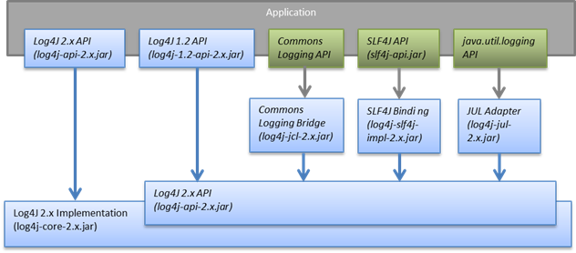

|
Frequently Asked Questions
I’m seeing this error “Unable to locate a logging implementation, using SimpleLogger”. What is wrong?You have the log4j-api-2.x jar file in your classpath but you still need to add the log4j-core-2.x jar to the classpath. (Also, it looks like you are using an old version of Log4j 2. You may want to upgrade.) Which JAR files do I need?You need at least the log4j-api-2.x and the log4j-core-2.x jar files. The other jars are necessary if your application calls the API of another logging framework and you want to route logging calls to the Log4j 2 implementation.  You can use the log4j-to-slf4j adapter jar when your application calls the Log4j 2 API and you want to route logging calls to a SLF4J implementation.
Some of the Log4j components have features with optional dependencies. The component page will have more detail. For example, the log4j-core component page has an outline of which log4j-core features have external dependencies. How do I exclude conflicting dependencies?There are several scenarios where you may end up with conflicting dependencies, especially transitively included ones. The following table shows for each Log4j dependency on the left (implicit groupId of org.apache.logging.log4j), the following dependencies on the right can be safely excluded (given in the format groupId:artifactId).
Using Apache Maven, dependencies can be globally excluded in your project like so: <dependencies>
<dependency>
<groupId>log4j</groupId>
<artifactId>log4j</artifactId>
<version>1.2.17</version>
<scope>provided</scope>
</dependency>
</dependencies>
Dependencies can be explicitly excluded for specific dependencies as well. For example, to use a project with Log4j 2 instead of Log4j 1.x: <dependencies>
<dependency>
<groupId>com.example</groupId>
<artifactId>example-project</artifactId>
<version>1.0</version>
<exclusions>
<exclusion>
<groupId>log4j</groupId>
<artifactId>log4j</artifactId>
</exclusion>
<exclusion>
<groupId>org.slf4j</groupId>
<artifactId>slf4j-log4j12</artifactId>
</exclusion>
</exclusions>
</dependency>
<dependency>
<groupId>org.apache.logging.log4j</groupId>
<artifactId>log4j-core</artifactId>
<version>2.11.2</version>
</dependency>
<dependency>
<groupId>org.apache.logging.log4j</groupId>
<artifactId>log4j-slf4j-impl</artifactId>
<version>2.11.2</version>
</dependency>
<dependency>
<groupId>org.apache.logging.log4j</groupId>
<artifactId>log4j-1.2-api</artifactId>
<version>2.11.2</version>
</dependency>
</dependencies>
Dependencies can be globally excluded in Gradle like so: configurations {
all*.exclude group: 'log4j', module: 'log4j'
}
The equivalent Gradle config for the above Maven exclusion would look like: dependencies {
compile('com.example:example-project:1.0') {
exclude group: 'log4j', module: 'log4j'
exclude group: 'org.slf4j', module: 'slf4j-log4j12'
}
compile('org.apache.logging.log4j:log4j-core:2.11.2')
compile('org.apache.logging.log4j:log4j-slf4j-impl:2.11.2')
compile('org.apache.logging.log4j:log4j-1.2-api:2.11.2')
}
How do I specify the configuration file location?By default, Log4j looks for a configuration file named log4j2.xml (not log4j.xml) in the classpath. You can also specify the full path of the configuration file with this system property: -Dlog4j.configurationFile=path/to/log4j2.xml That property can also be included in a classpath resource file named log4j2.component.properties. Web applications can specify the Log4j configuration file location with a servlet context parameter. See this section of the Using Log4j 2 in Web Applications manual page. How do I configure log4j2 in code without a configuration file?Starting with version 2.4, Log4j 2 provides an API for programmatic configuration The new ConfigurationBuilder API allows you to create Configurations in code by constructing component definitions without requiring you to know about the internals of actual configuration objects like Loggers and Appenders. How do I reconfigure log4j2 in code with a specific configuration file?See the below example. Be aware that this LoggerContext class is not part of the public API so your code may break with any minor release. // import org.apache.logging.log4j.core.LoggerContext;
LoggerContext context = (org.apache.logging.log4j.core.LoggerContext) LogManager.getContext(false);
File file = new File("path/to/a/different/log4j2.xml");
// this will force a reconfiguration
context.setConfigLocation(file.toURI());
How do I shut down log4j2 in code?Normally there is no need to do this manually. Each LoggerContext registers a shutdown hook that takes care of releasing resources when the JVM exits (unless system property log4j.shutdownHookEnabled is set to false). Web applications should include the log4j-web module in their classpath which disables the shutdown hook but instead cleans up log4j resources when the web application is stopped. However, if you need to manually shut down Log4j, you can do so as in the below example. Note that there is an optional parameter for specifying which LoggerContext to shut down. import org.apache.logging.log4j.LogManager; // ... LogManager.shutdown(); How do I send log messages with different levels to different appenders?You don’t need to declare separate loggers to achieve this. You can set the logging level on the AppenderRef element. <?xml version="1.0" encoding="UTF-8"?>
<Configuration status="WARN">
<Appenders>
<File name="file" fileName="app.log">
<PatternLayout>
<Pattern>%d %p %c{1.} [%t] %m %ex%n</Pattern>
</PatternLayout>
</File>
<Console name="STDOUT" target="SYSTEM_OUT">
<PatternLayout pattern="%m%n"/>
</Console>
</Appenders>
<Loggers>
<Root level="trace">
<AppenderRef ref="file" level="DEBUG"/>
<AppenderRef ref="STDOUT" level="INFO"/>
</Root>
</Loggers>
</Configuration>
How do I debug my configuration?First, make sure you have the right jar files on your classpath. You need at least log4j-api and log4j-core. Next, check the name of your configuration file. By default, log4j2 will look for a configuration file named log4j2.xml on the classpath. Note the “2” in the file name! (See the configuration manual page for more details.) From log4j-2.9 onward From log4j-2.9 onward, log4j2 will print all internal logging to the console if system property log4j2.debug is defined (with any or no value). Prior to log4j-2.9 Prior to log4j-2.9, there are two places where internal logging can be controlled: If the configuration file is found correctly, log4j2 internal status logging can be controlled by setting <Configuration status="trace"> in the configuration file. This will display detailed log4j2-internal log statements on the console about what happens during the configuration process. This may be useful to trouble-shoot configuration issues. By default the status logger level is WARN, so you only see notifications when there is a problem. If the configuration file is not found correctly, you can still enable log4j2 internal status logging by setting system property -Dorg.apache.logging.log4j.simplelog.StatusLogger.level=TRACE. How do I dynamically write to separate log files?Look at the RoutingAppender. You can define multiple routes in the configuration, and put values in the ThreadContext map that determine which log file subsequent events in this thread get logged to. You can use the ThreadContext map value to determine the log file name. <Routing name="Routing">
<Routes pattern="$${ctx:ROUTINGKEY}">
<!-- This route is chosen if ThreadContext has value 'special' for key ROUTINGKEY. -->
<Route key="special">
<RollingFile name="Rolling-${ctx:ROUTINGKEY}" fileName="logs/special-${ctx:ROUTINGKEY}.log"
filePattern="./logs/${date:yyyy-MM}/${ctx:ROUTINGKEY}-special-%d{yyyy-MM-dd}-%i.log.gz">
<PatternLayout>
<pattern>%d{ISO8601} [%t] %p %c{3} - %m%n</pattern>
</PatternLayout>
<Policies>
<TimeBasedTriggeringPolicy interval="6" modulate="true" />
<SizeBasedTriggeringPolicy size="10 MB" />
</Policies>
</RollingFile>
</Route>
<!-- This route is chosen if ThreadContext has no value for key ROUTINGKEY. -->
<Route key="$${ctx:ROUTINGKEY}">
<RollingFile name="Rolling-default" fileName="logs/default.log"
filePattern="./logs/${date:yyyy-MM}/default-%d{yyyy-MM-dd}-%i.log.gz">
<PatternLayout>
<pattern>%d{ISO8601} [%t] %p %c{3} - %m%n</pattern>
</PatternLayout>
<Policies>
<TimeBasedTriggeringPolicy interval="6" modulate="true" />
<SizeBasedTriggeringPolicy size="10 MB" />
</Policies>
</RollingFile>
</Route>
<!-- This route is chosen if ThreadContext has a value for ROUTINGKEY
(other than the value 'special' which had its own route above).
The value dynamically determines the name of the log file. -->
<Route>
<RollingFile name="Rolling-${ctx:ROUTINGKEY}" fileName="logs/other-${ctx:ROUTINGKEY}.log"
filePattern="./logs/${date:yyyy-MM}/${ctx:ROUTINGKEY}-other-%d{yyyy-MM-dd}-%i.log.gz">
<PatternLayout>
<pattern>%d{ISO8601} [%t] %p %c{3} - %m%n</pattern>
</PatternLayout>
<Policies>
<TimeBasedTriggeringPolicy interval="6" modulate="true" />
<SizeBasedTriggeringPolicy size="10 MB" />
</Policies>
</RollingFile>
</Route>
</Routes>
</Routing>
How do I set a logger’s level programmatically?You can set a logger’s level with the class Configurator from Log4j Core. Be aware that the Configurator class is not part of the public API. // org.apache.logging.log4j.core.config.Configurator;
Configurator.setLevel("com.example.Foo", Level.DEBUG);
// You can also set the root logger:
Configurator.setRootLevel(Level.DEBUG);
How do I set my log archive retention policy? How do I delete old log archives?The DefaultRolloverStrategy of the Rolling File appender (and Rolling Random Access File appender) supports a Delete element. Starting at a specified base directory, you can delete all files for which some condition holds true, for example all files that match a given file name pattern and are older than some number of days. More complex conditions are possible, and if the built-in conditions are not sufficient, users can provide custom conditions by creating plugin conditions or by writing a script condition. What are the trade-offs of using the Log4j 2 API versus the SLF4J API?The Log4j 2 API and SLF4J have a lot in common. They both share the objective of cleanly separating the logging API from the implementation. We believe that the Log4j 2 API can help make your application more performant while offering more functionality and more flexibility. There may be a concern that using the Log4j 2 API will tightly couple your application to Log4j 2. This is not the case: applications coded to the Log4j 2 API always have the option to use any SLF4J-compliant library as their logging implementation with the log4j-to-slf4j adapter. See the which jars FAQ entry for details. There are several advantages to using the Log4j 2 API:
Is Log4j 2 still garbage-free when I use the SLF4J API?Yes, the log4j-slf4j-impl binding (together with log4j-core) implements the org.slf4j.Logger methods to be GC-free. However, bear in mind that there are some limitations: The SLF4J API only offers up to two parameters for a parameterized message. More than that uses varargs which creates a temporary object for the parameter array. The Log4j 2.6 API has methods for up to ten unrolled parameters. Another consideration is that the SLF4J API forces your application to log Strings. Log4j 2 API lets you log any java.lang.CharSequence, and even any Objects. Log4j can log any Object that implements java.lang.CharSequence or org.apache.logging.log4j.util.StringBuilderFormattable without creating garbage. The [org.slf4j.spi.LocationAwareLogger::log](http://www.slf4j.org/api/org/slf4j/spi/LocationAwareLogger.html#log(org.slf4j.Marker, java.lang.String, int, java.lang.String, java.lang.Object[], java.lang.Throwable)) method is not yet implemented in a garbage-free manner in the log4j-slf4j-impl binding. It creates a new message object for each call. How do I log my domain object without creating garbage?One option is to let the domain object implement java.lang.CharSequence. However, for many domain objects it may not be trivial to implement this without allocating temporary objects. An alternative is to implement the org.apache.logging.log4j.util.StringBuilderFormattable interface. If an object is logged that implements this interface, its formatTo method is called instead of toString(). package org.apache.logging.log4j.util;
public interface StringBuilderFormattable {
/**
* Writes a text representation of this object into the specified {@code StringBuilder},
* ideally without allocating temporary objects.
*
* @param buffer the StringBuilder to write into
*/
void formatTo(StringBuilder buffer);
}
How do I create a custom logger wrapper that shows the correct class, method and line number?Log4j remembers the fully qualified class name (FQCN) of the logger and uses this to walk the stack trace for every log event when configured to print location. (Be aware that logging with location is slow and may impact the performance of your application.) The problem with custom logger wrappers is that they have a different FQCN than the actual logger, so Log4j can’t find the place where your custom logger was called. The solution is to provide the correct FQCN. The easiest way to do this is to let Log4j generate the logger wrapper for you. Log4j comes with a Logger wrapper generator tool. This tool was originally meant to support custom log levels and is documented here. The generated logger code will take care of the FQCN. |
||||||||||||||||||||||||